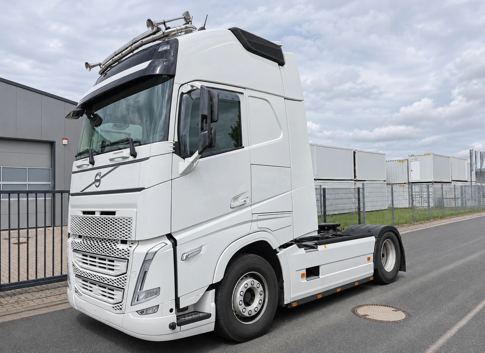
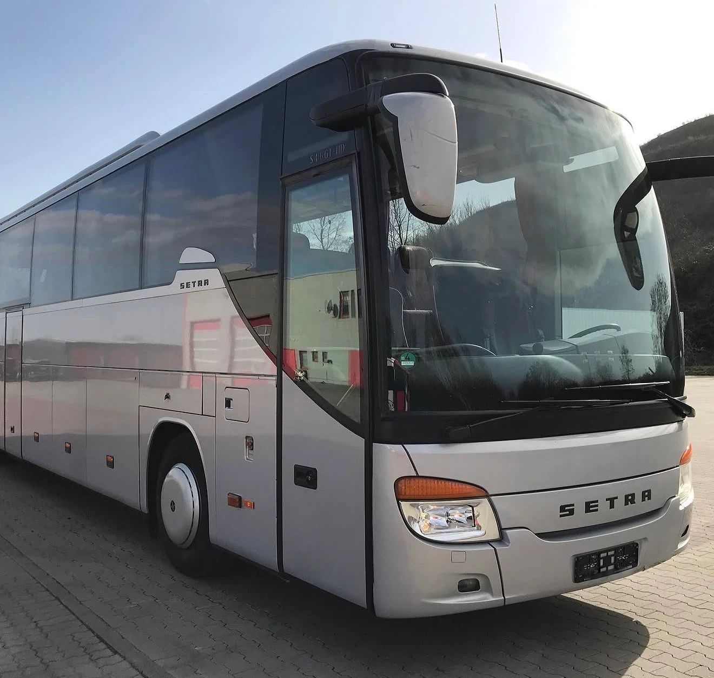
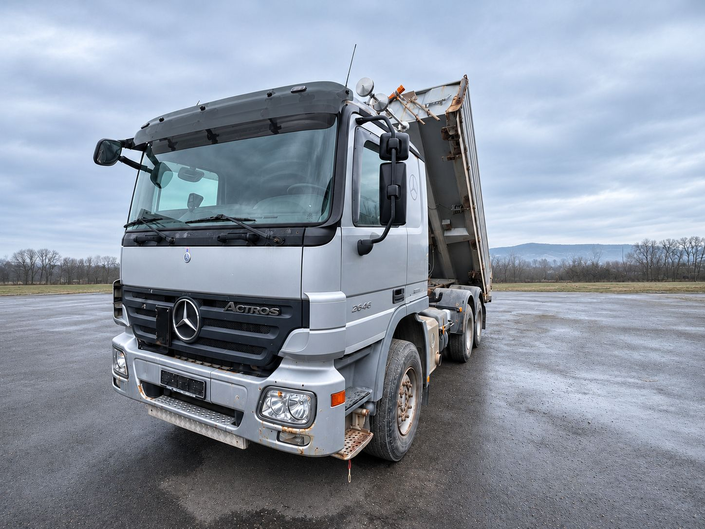

Wer mit einem voll beladenen 40-Tonner eine lange Bergabfahrt vor sich hat, darf sich nicht allein auf die Betriebsbremse verlassen. Die Bremsscheiben würden heiß, die Bremswirkung ließe nach. Deshalb haben schwere LKW und Busse eine zweite Bremse, die Dauerbremse. Die stärkste Form davon ist der Retarder.
Retarder steht in vielen Inseraten ganz oben in der Ausstattung, und Käufer fragen oft gezielt danach. In diesem Beitrag erklären wir, was ein Retarder ist, wie er funktioniert, welche Arten es gibt, was ihn von der Motorbremse unterscheidet und was er beim Kauf und Verkauf eines gebrauchten LKW bedeutet.
Was ist ein Retarder?
Ein Retarder ist eine verschleißfreie Zusatzbremse. Er sitzt am Antriebsstrang, also am Motor, am Getriebe oder an der Gelenkwelle, und bremst das Fahrzeug, ohne dass Bremsbeläge oder Scheiben beteiligt sind. Die Bewegungsenergie wird in Wärme umgewandelt und über das Kühlsystem abgegeben.
Der Name kommt vom englischen „to retard“, verzögern. Im LKW wird der Retarder meist über einen Hebel rechts am Lenkrad in mehreren Stufen geschaltet. In Bussen mit Automatikgetriebe ist er oft in das Bremspedal eingebunden: Wer leicht bremst, bremst zuerst mit dem Retarder, erst bei stärkerem Druck greift die normale Bremse (Eurotransport).
Der Vorteil: Die Betriebsbremse bleibt kühl und ist voll da, wenn sie gebraucht wird. Gleichzeitig halten Beläge und Scheiben deutlich länger.
Wie funktioniert ein Retarder?
Die meisten Retarder in LKW sind hydrodynamisch. In einem Gehäuse stehen sich zwei Schaufelräder gegenüber: der Rotor, der sich mit dem Antriebsstrang dreht, und der feststehende Stator. Schaltet der Fahrer den Retarder ein, wird Öl oder Wasser in das Gehäuse geleitet. Der Rotor schleudert die Flüssigkeit gegen den Stator, wird dabei selbst abgebremst und mit ihm das Fahrzeug. Je mehr Flüssigkeit im Gehäuse ist, desto stärker die Bremswirkung (Eurotransport).
Ältere Retarder arbeiten mit Öl und brauchen einen eigenen Wärmetauscher. Neuere Bauarten nutzen das Kühlwasser des Motors direkt. Diese Wasserretarder sind leichter und kleiner, und das Wasser muss nicht wie Öl regelmäßig gewechselt werden.
Daneben gibt es elektrodynamische Retarder, auch Wirbelstrombremse genannt. Hier erzeugen Spulen ein Magnetfeld, das die mit der Gelenkwelle verbundenen Rotoren abbremst. Man findet sie vor allem in Bussen und leichteren Fahrzeugen.
Primärretarder und Sekundärretarder
Bei den hydrodynamischen Retardern kommt es darauf an, wo sie sitzen:
- Primärretarder: sitzt am Motor, vor dem Getriebe. Seine Bremskraft hängt von der Motordrehzahl ab. Er bremst am stärksten bei hoher Drehzahl und niedrigem Tempo, also dort, wo im Verteilerverkehr und auf der Baustelle gefahren wird. Bekanntes Beispiel ist der PriTarder von MAN, ein Wasserretarder von Voith.
- Sekundärretarder: sitzt hinter dem Getriebe am Abtrieb oder an der Gelenkwelle. Seine Bremskraft hängt vom Fahrtempo ab, nicht von der Drehzahl. Das passt zum Fernverkehr, wo der Motor bei 80 km/h mit niedriger Drehzahl läuft.
Der bekannteste Sekundärretarder ist der Intarder von ZF. Er ist direkt in das ZF-Getriebe eingebaut und kommt laut ZF auf bis zu 4.000 Nm Bremsmoment (ZF). Weil viele Hersteller ZF-Getriebe verwenden, findet man den Intarder unter anderem bei DAF, MAN und Iveco. „Intarder“ ist also kein Oberbegriff, sondern ein Produktname.
Retarder bei Mercedes-Benz, Volvo, Scania und MAN
Jeder große Hersteller hat eine eigene Lösung. Die wichtigsten:
- Mercedes-Benz: Im Actros und Arocs sitzt seit der Generation MP4 der Secondary Water Retarder, entwickelt mit Voith. Er arbeitet mit dem Kühlwasser des Motors und ist direkt am Getriebe angebaut (Voith). Ältere Actros hatten einen Öl-Retarder von Voith. Mehr zu den Generationen lesen Sie in unserem Beitrag Actros MP1 bis MP5.
- Volvo: Für den FH gibt es einen hydraulischen Retarder am Getriebe, abgestimmt auf das I-Shift-Getriebe und die Motorbremse VEB+ (Volvo Trucks). Weil die VEB+ schon kräftig bremst, verzichten viele Käufer im Fernverkehr auf den Retarder. Ein gebrauchter Volvo FH hat deshalb längst nicht immer einen. Mehr zu den Baureihen: Volvo Sattelzugmaschinen.
- Scania: Scania baut eigene hydraulische Retarder am Getriebe. Seit 2015 gibt es eine Ausführung, die sich abkoppelt, wenn sie nicht gebraucht wird, und so Kraftstoff spart (Scania).
- MAN: Neben dem Intarder im ZF-Getriebe gab es den PriTarder als Primärretarder am Motor. Für die Euro-6-Modelle TGS und TGX stellte Voith ihn 2013 als Aquatarder vor (Voith).

Retarder oder Motorbremse: Was ist der Unterschied?
Beide sind Dauerbremsen, aber sie arbeiten verschieden:
- Motorbremse: Der Motor selbst bremst. Eine Klappe im Auspuff staut die Abgase, oder Ventile öffnen so, dass der Motor beim Verdichten Kraft verbraucht, statt sie abzugeben. Bekannte Namen sind die Konstantdrossel bei Mercedes-Benz, die EVB bei MAN und die VEB bei Volvo. Die Motorbremse ist günstiger und leichter, braucht aber hohe Drehzahlen.
- Retarder: ein eigenes Bauteil am Antriebsstrang, das unabhängig vom Motor bremst. Er bremst in der Regel stärker und gleichmäßiger, kostet aber mehr, wiegt mehr und braucht ein leistungsfähiges Kühlsystem.
Viele schwere LKW haben beides. Dann regelt die Elektronik, welche Bremse wann wie stark arbeitet. Im Inserat steht oft nur „Retarder“, gemeint ist aber das Zusammenspiel.
Eine Einschränkung gilt für beide: Sie wirken nur auf die angetriebenen Räder. Auf Schnee und Glätte kann zu viel Bremskraft an der Antriebsachse den Zug instabil machen (Eurotransport). Moderne Fahrzeuge regeln das über ABS und Bremsmanagement, trotzdem gehört eine vorsichtige Stufe im Winter zum Handwerk.
Ist ein Retarder Pflicht?
Ein Retarder nicht, eine Dauerbremse schon. Nach § 41 Abs. 15 StVZO brauchen Kraftomnibusse über 5,5 t und alle anderen Kraftfahrzeuge über 9 t zulässigem Gesamtgewicht eine Dauerbremse. Sie muss so stark sein, dass das voll beladene Fahrzeug ein Gefälle von 7 Prozent über 6 km mit 30 km/h hinunterfahren kann. Ausdrücklich zählt dazu auch die Motorbremse (§ 41 StVZO).
Deshalb hat nicht jeder schwere LKW einen Retarder. Viele kommen mit einer kräftigen Motorbremse aus.
Strenger ist es im Gefahrgutverkehr. Tankfahrzeuge für entzündbare Flüssigkeiten (FL), andere Tankfahrzeuge (AT) und Fahrzeuge für Explosivstoffe (EX/III) müssen nach Abschnitt 9.2.3.1.2 ADR die Anforderungen an Dauerbremsanlagen aus UN-Regelung Nr. 13 erfüllen. In der ADR-Zulassungsbescheinigung steht unter Punkt 8, für welche Gesamtmasse die Dauerbremse ausreicht. Liegt der Retarder hinter dem Fahrerhaus und wird heiß, braucht er außerdem ein Hitzeschild zum Tank (Abschnitt 9.2.3.3 ADR).
Woran erkennt man, ob ein LKW einen Retarder hat?
Im Fahrzeugschein steht der Retarder nicht. Diese Hinweise helfen:
- Der Hebel am Lenkrad: Viele LKW haben rechts einen Hebel mit mehreren Stufen. Allein beweist er aber nichts, denn darüber läuft oft auch die Motorbremse.
- Die Anzeige im Display: Bei vielen Fahrzeugen zeigt das Kombiinstrument eine eigene Retarder-Anzeige oder die Bremsstufe.
- Ein Blick unter das Fahrzeug: Ein Sekundärretarder sitzt als zusätzliches Gehäuse am Getriebeausgang.
- Die Ausstattungsliste: Am sichersten ist die Datenkarte des Herstellers mit allen Ausstattungscodes. Die bekommt man über eine Fachwerkstatt der Marke.
Retarder beim Kauf und Verkauf
Für Käufer ist der Retarder vor allem dann wichtig, wenn das Fahrzeug viel Gefälle sieht: auf der Baustelle, im Kipperbetrieb, in den Alpen, auf dem Balkan, im Gefahrgutverkehr und bei Reisebussen. Wer nur im Flachland Fernverkehr fährt, legt oft weniger Wert darauf.
Beim Verkauf heißt das:
- Der Retarder vergrößert den Kreis der Käufer. Ein schwerer Kipper oder ein Reisebus ohne Retarder kommt für manche Interessenten gar nicht infrage.
- Er macht das Fahrzeug nicht automatisch viel wertvoller. Am Ende entscheiden Baujahr, Euro-Norm, Laufleistung, Aufbau und Zustand. Der Retarder ist ein Ausstattungsmerkmal unter vielen.
- Ein defekter Retarder kostet. Ölverlust am Gehäuse, Fehlermeldungen im Display oder ein Retarder, der nicht mehr zuschaltet, fließen in jede Bewertung ein. Wer davon weiß, sagt es besser gleich.
- Genaue Angaben helfen. Schreiben Sie in Ihre Anfrage, ob ein Retarder verbaut ist und welcher, etwa Intarder oder Secondary Water Retarder. Das spart Rückfragen.
Mehr dazu, welche Angaben beim Verkauf zählen, lesen Sie in unserem Beitrag Nutzfahrzeug verkaufen. Wie die Schadstoffklasse den Preis beeinflusst, erklären wir unter Euro 3 bis Euro 6.

Wir kaufen LKW und Busse mit und ohne Retarder
Die ECS Exclusive Commerce Services GmbH aus Gehrden bei Hannover kauft LKW an: Sattelzugmaschinen, Kipper, Verteiler-LKW und Baustellenfahrzeuge aller Marken, dazu Reisebusse und Linienbusse, einzeln oder als ganzen Fuhrpark. Weil wir Nutzfahrzeuge auch exportieren, finden wir oft auch für ältere Baujahre einen Abnehmer.
So läuft es ab:
- Sie rufen uns an, schreiben uns per WhatsApp oder senden uns eine E-Mail.
- Sie nennen uns Typ, Erstzulassung, Kilometerstand und Ausstattung, zum Beispiel den Retarder, und schicken ein paar Fotos.
- Wir machen Ihnen ein konkretes Angebot.
- Nach Ihrer Zusage erstellen wir den Kaufvertrag und schließen das Geschäft ab.
- Wir holen das Fahrzeug ab, deutschlandweit.
Mehr zum Ablauf lesen Sie unter Unsere Arbeit. Sie möchten Ihren LKW oder Bus verkaufen? Schreiben Sie uns oder rufen Sie an.
Hinweis: Dieser Beitrag dient der allgemeinen Information und ersetzt keine Rechts- oder Steuerberatung. Alle Angaben ohne Gewähr, Stand: 22. November 2026. Genannte Marken und Modellbezeichnungen gehören ihren jeweiligen Inhabern. Die ECS GmbH ist ein unabhängiger Händler und steht in keiner Verbindung zu den Herstellern.